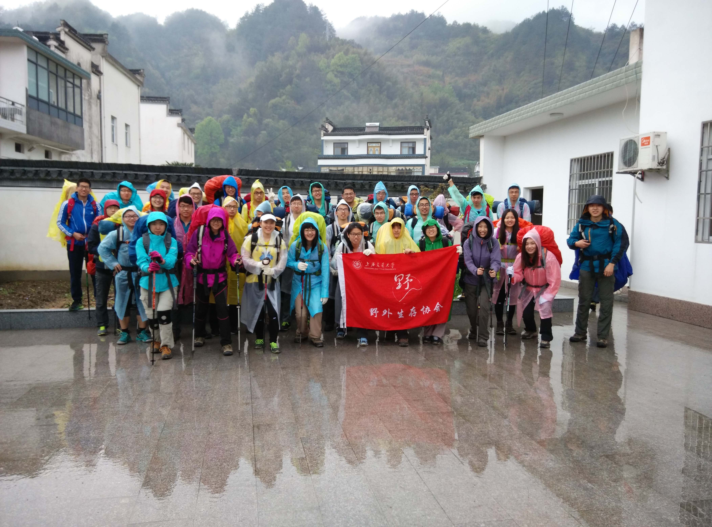

[转寄/推荐][转贴][删除][修改][设置可RE属性][上一篇][返回讨论区][下一篇][回文章][同主题列表][同主题阅读][从这里展开]
发信人: szzxczh (szzxczh), 信区: outdoor
标 题: 2015龙须山队记兼副领队总结——CZH
发信站: 饮水思源 (2015年04月10日19:39:36 星期五)
各个时间节点的记录：
4/4
7:00 庙门出发
9:30 杭州紫金港枢纽附近交通事故大堵车，堵了一个小时
11:00 司机在地面道路走错了一小段路
4/5
2:15 到达向导家
3:00 睡觉
6:30 起床
7:10 吃饭
8:10 出发
8:35 休息五分钟，大家换衣服
9:42 下包休息十分钟
10:55 吃午饭，顺便躲雨，但是石头洞里面空间不够，有两个组在雨里面吃饭
11:40 吃完午饭，雨比较小，出发
12:00 第一个布绳点，布绳上升，到该花了半个小时全部通过
13:05 到达营地，搭帐篷
14:00 轻装前往观景台，压队和队记留在营地
16:00 从观景台返回营地
16:40 各组开始做饭
19:00 各个组基本上都吃好了，有的回帐篷，有的在木屋外面烤火，有的在木屋里面玩狼
人
21:00 全体睡觉
4/6
5:30 叫醒各个帐篷，但感觉直到5:55才全部出帐篷，然后大家开始做早饭
8:18 原定7:30 拔营，8:00为最晚拔营时间，但因为有几个组比较慢，8:18才出发
9:30 第一处布绳点，布绳下降，9:52全部通过
10:20 下包休息十分钟
10:50 “屁降点”，大概花了20分钟不到一点全部通过
11:30 第二处布绳点，20分钟左右全部通过
12:10 第三组组长受轻伤，队医处理导致脱节，关于岔路和领队沟通失误，后来副领队来
接应，8分钟过后赶上大队伍
13:00 到达向导家
14:50 回交大
所见及总结：
1.
关于包的收缩带。感觉之前强调的比较多的是腰带一定要收紧，然后大家其他的收缩带都
松松垮垮的，这样虽然影响不是很大，不过最好还是能够做得更好一些。
2.
关于雨衣。这次第一天下了比较大的雨，大家都穿上了雨衣，我全程都没有穿雨衣，因为
觉得穿雨衣效果不是很好。首先没过过久大多数雨衣都出现了破损；第二雨衣非常的闷，
走起来让人非常难受容易产生劳累感；第三雨衣比较长，有时候会影响到走路；第四雨衣
不能把背包罩住，所以大家的包基本都湿了，好在强调了里面的物品要做防水处理。个人
觉得在这次龙须山这样的气温下有一个背包罩比一件雨衣要重要的多，这次的气温穿一件
速干就行了，即便被全部打湿，也不会很冷。当然有一件冲锋衣就更好了，尤其像学姐一
件始祖鸟，雨滴落在上面有如落在荷叶上。。。
3.
关于帐篷。大家去观景台的时候我的压队坐在木头棚子里，看到旁边的户外俱乐部的帐篷
搭得一塌糊涂，有的帐篷里水位颇高，于是我跑去把我们所有的帐篷都检查了一遍，发现
也有问题。有的帐篷竟然没有拉外账的拉链，任凭雨打在内外帐之间的包上。。。然后一
半的帐篷地钉扎得都有问题，内外帐之间没有撑开，建议以后如果碰到下雨天领队组一定
要仔细检查一下所有的帐篷。
4. 两点检讨。一个是时间节点的把控，比如第二天早上预计7:30拔营，最晚8:00出发，但
最后到了8:18才出发。另一个是行走过程中有人擅自停留拍照导致队伍拉的比较长，而且
有人自己走新的路线不跟着前面的人走没有及时严厉的制止。我当时觉得这条线比较水，
而且是会员线气氛比较欢乐，不想拼命的催大家，或者训斥乱走的人，可能太松了一些，
好在没有发生什么问题。
5.
关于“屁降点”。这是个大约50度的坡，完全是裸露的岩石，落差大约4米，从后来的情况
看，这里可能布绳还好一点。很多人看到这个落差非常恐惧，不敢往前走，或者是一屁股
坐下来，完全靠裤子在石头上摩擦，让人看着都觉得疼。。。布绳的话通过起来应该会快
不少。
6.
关于食物。不得不说这次出现真是刷新了我对腐败的认识。一个组带16个鸡蛋也就忍了，
一个组带3个锅3个炉头3个气罐也就忍了，居然有人用4瓶冰水来保存火锅料！！！这简直
是在练习负重啊！。。。准备会上没怎么说腐败的问题，竟然就这么让我大开眼界。
最后，这是我出过的最水的一条线，没有想到也是最美的一条线。第二天在山脊上看到山
间的雾气，使人产生了幻觉。想起高原的云海，和江浙山里的云海还是有区别的，前者被
群山环绕，在强烈的阳光下显得壮阔不已，后者却更给人一种飘飘欲仙腾云驾雾的感觉。
晚上宿营的时候看到了一群户外俱乐部的人，他们后来的篝火晚会如同狂欢，一首接一首
的歌，围着火疯狂地跳舞，不知为何，想起了之前在四川徒步看到的那些对雪山顶礼膜拜
的藏民，总觉得人在山里不该这么放肆…………
 screen.width - 200){this.width = screen.width - 200}">
|
[转寄/推荐][转贴][删除][修改][设置可RE属性][上一篇][返回讨论区][下一篇][回文章][同主题列表][同主题阅读][从这里展开]